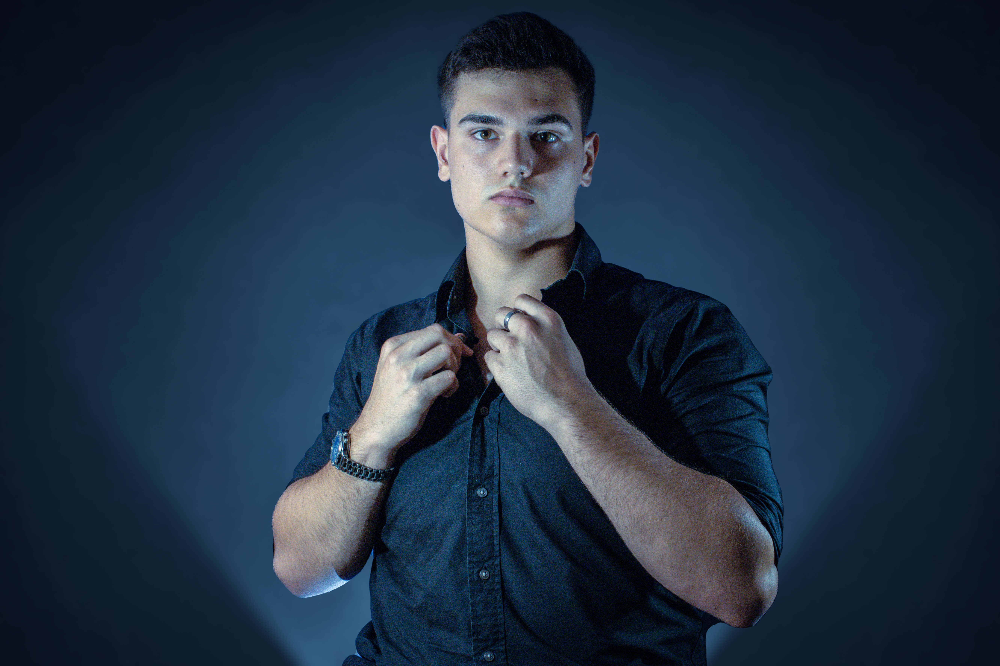

Profil

Jan Levínský
Studuji filmovou tvorbu a mou největší vášní je cinematografie a fotografie. Ve své tvorbě propojuji technickou preciznost s uměleckým cítěním, protože věřím, že každý záběr musí vyprávět příběh. Dosud jsem nasbíral zkušenosti napříč různými žánry – od krátkometrážních filmů a dokumentární tvorby až po reklamní spoty. Fascinuje mě zachycování tradičních řemesel, portrétní fotografie a zkoumání experimentálních forem vizuálního vyjádření.
Jsem otevřený novým kreativním výzvám a neustále se v oboru vzdělávám. Aktivně hledám projekty a spolupráce, do kterých mohu vnést svůj autorský pohled i technické dovednosti.
Vzdělání
SPŠST PANSKÁ | Filová a televizní tvorba
Studium poskytující pevné technické i řemeslné základy v oblasti audiovize. Intenzivní praxe s kamerovou technikou, osvětlením, střihem a postprodukcí. Studium úspěšně završeno maturitní zkouškou s vyznamenáním a absolventským dokumentárním filmem.
Slezská univerzita v Opavě | Multimédia a popularizace
Vysokoškolské studium propojující audiovizuální praxi s širším teoretickým přesahem. Zaměření na tvorbu komplexních multimediálních projektů, vizuální komunikaci a efektivní předávání příběhů a informací současnému publiku.
Filmografie & Praxe
Za Okny
Experimentální krátkometrážní film. První větší projekt zaměřený na precizní práci s přirozeným světlem a budování vizuální atmosféry.
Zlatý Ámos
Audiovizuální záznam z ankety o nejoblíbenějšího učitele. Zaměřeno na pohotovou reportážní kameru, zachycení autentických emocí a plynulý střih události.
Reklama — Jack Saloon
Reklamní spot pro značku Angry Beards vytvořený v rámci kamerových praxí. Kombinuje čistou produktovou kompozici s dynamickým střihem.
Tábor Dvojka
Série krátkých každodenních video reportáží z letního tábora. Formát se cíleně vyhýbá klasickému televiznímu zpravodajství a sází na filmovou estetiku, zachycení přirozeného světla a autentické letní atmosféry.
Postupy práce
Absolventský dokumentární projekt zaměřený na řemesla, koncipovaný jako dva samostatné podfilmy (zubní technik a hodinář). Střihová skladba není paralelní, ale je věcně postavena na vizuálních návaznostech na základě podobnosti objektů a pohybu napříč záběry.
Tábor Dvojka
Navazující ročník každodenních táborových reportáží. Posun k ještě výraznějšímu filmovému pojetí a vizuálnímu storytellingu, který divákovi zprostředkovává náladu a energii jednotlivých dní namísto pouhého popisu událostí.
Spolupráce
Watch Makers
Dent&Life
Dovednosti
Cinematografie
Postprodukce
Fotografie
Technické
Vybavení
Kamera
- Canon EOS 250D
Objektivy
- Canon 18-55
- Helios 44-M
- Tamron 24-105
- Canon 70-300